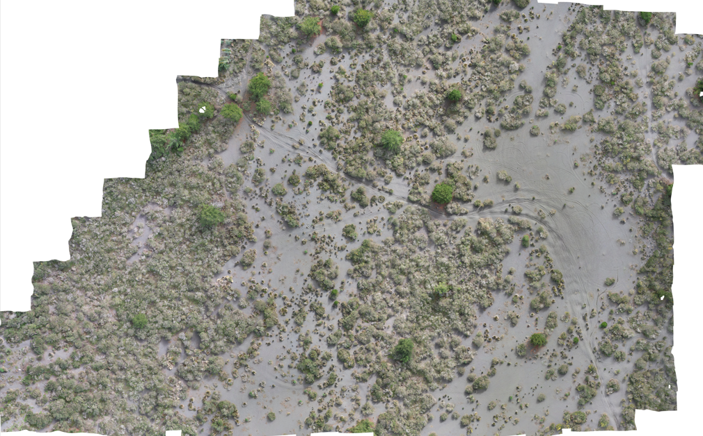

PROYECTO 03
Ortomosaico de las Dunas de Mariscadero

El proyecto consistió en el levantamiento fotogramétrico mediante dron de una geoforma ubicada en las Dunas de Mariscadero, correspondiente a una terraza litoral situada aproximadamente a 20mts s.n.m., cercana a la desembocadura del Rahue, Región del Maule.
A partir de las imágenes obtenidas fue posible construir un ortomosaico de alta resolución que representa con precisión la superficie del terreno.
Objetivos del levantamiento
- Documentar digitalmente el paisaje.
- Generar un ortomosaico de alta resolución.
- Apoyar la búsqueda de posibles sitios arqueológicos desde una perspectiva aérea.
- Complementar las prospecciones pedestres realizadas en terreno.
- Crear una base cartográfica para futuras investigaciones.
Metodología
- Reconocimiento previo del área mediante caminata.
- Definición del sector a documentar.
- Vuelo automatizado del dron utilizando software especializado.
- Altura de vuelo entre 30 y 50 metros.
- Captura sistemática de fotografías con alto traslape.
- Obtención de aproximadamente 380 fotografías.
- Procesamiento fotogramétrico para generar un ortomosaico 2D.
¿Qué es un ortomosaico?
Un ortomosaico es una imagen de alta resolución formada por la unión de cientos de fotografías aéreas corregidas geométricamente, permitiendo representar el terreno con precisión métrica.
Resultados
- Generación de un ortomosaico de alta resolución.
- Registro digital permanente de la geoforma.
- Apoyo a la identificación de posibles evidencias arqueológicas.
- Base cartográfica para futuros estudios del paisaje.
Proyecto al que pertenece
Reconocimiento Integral del Paisaje Cultural y Natural de la Costa del Maule.